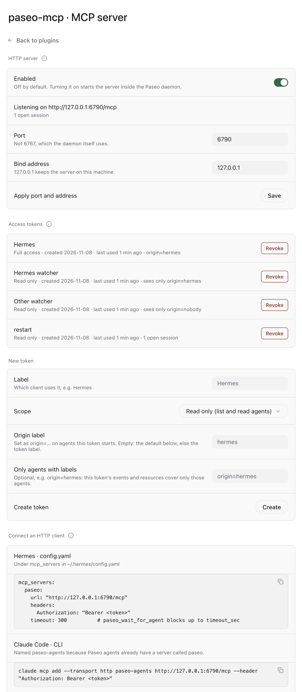
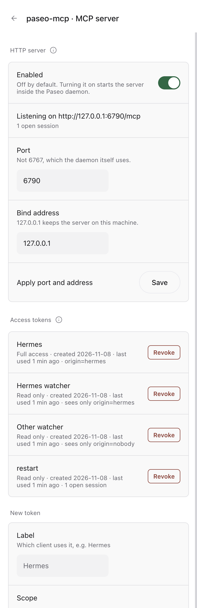
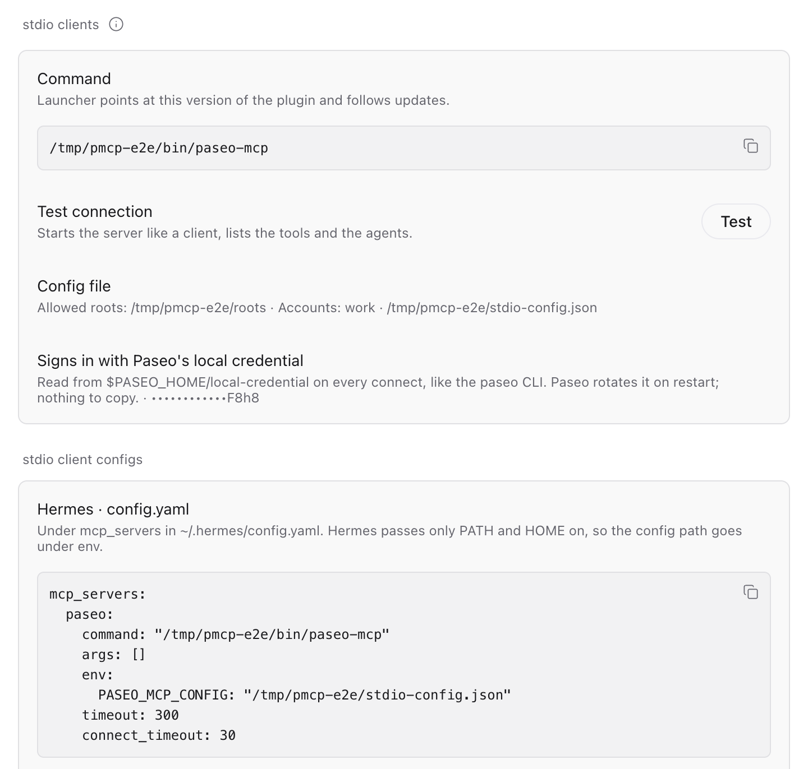
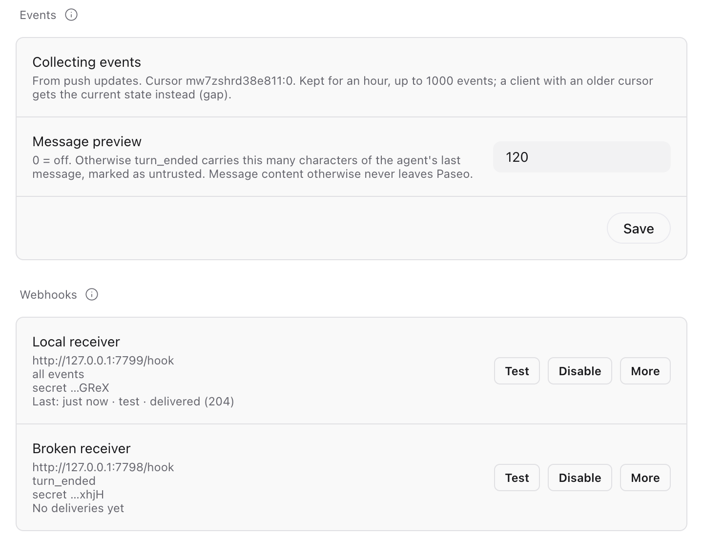
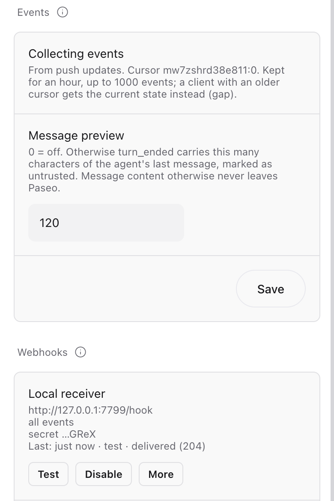

Give Hermes, Claude Code or any MCP client access to the coding agents in your local Paseo: list them, read what they did, start new ones, send follow-ups and wait for results. Every agent stays a normal Paseo chat you can open and take over.
Paseo is built for a person in front of the app. When an assistant should hand work to coding agents, for example a bug report from your inbox or a task split across repositories, it needs a way into Paseo. This server is that way in, over the Model Context Protocol.
Every agent with status, account and whether it needs you: finished, failed or waiting for a permission.
The tail of a chat as a compact transcript: messages, tool calls, todos and errors.
New Claude Code chats with a prompt, model, thinking level, permission mode, account and an optional worktree branch.
Send follow-ups. For a running turn, choose steer to add the message or interrupt to restart with it.
Block until a turn ends, or get events (finished, failed, limit, permission) as a long-poll tool, resource notifications or signed webhooks.
Agents start only inside allowed folders, carry an origin label, and a read-only mode hides every tool that changes something.
Clone and install. npm install also builds the server into dist/.
git clone https://github.com/MaxGierlachowski/paseo-mcp.git
cd paseo-mcp && npm installThen copy config.example.json to ~/.config/paseo-mcp/config.json, set allowedRoots to the folders agents may work in, and connect your client. With the plugin installed you can skip the clone: it keeps a launcher at ~/.local/bin/paseo-mcp.
paseo daemon start)In ~/.hermes/config.yaml. Hermes only passes PATH and HOME to MCP servers, so the config path goes under env.
mcp_servers:
paseo:
command: "node"
args: ["/path/to/paseo-mcp/dist/index.js"]
env:
PASEO_MCP_CONFIG: "/Users/you/.config/paseo-mcp/config.json"
timeout: 300 # wait_for_agent can block
connect_timeout: 30One command, then the tools show up in every Claude Code session.
claude mcp add paseo-agents -- node /path/to/paseo-mcp/dist/index.jsNamed paseo-agents because agents running inside Paseo already have a server called paseo.
Installed as a Paseo plugin, the same tools are served over Streamable HTTP by the daemon itself. No separate process, no config file: everything is set on the plugin's settings screen, and every client gets its own token. stdio clients get a stable launcher, a connection test and ready-made configs from the same screen.
npm ci and loads it. The HTTP server stays off..mcp.json) from the same screen.paseo plugin install github:MaxGierlachowski/paseo-mcpHermes, in ~/.hermes/config.yaml:
mcp_servers:
paseo:
url: "http://127.0.0.1:6790/mcp"
headers:
Authorization: "Bearer <token>"
timeout: 300Claude Code:
claude mcp add --transport http paseo-agents http://127.0.0.1:6790/mcp --header "Authorization: Bearer <token>"

Then it binds to 127.0.0.1:6790. Any other bind address must be typed in and comes with a warning.
Also from localhost. Stored only as a SHA-256 hash and compared in constant time. Revoking one ends its open sessions.
A read token never sees a tool that changes something. The global read-only switch applies on top.
Host and Origin headers must point at the server itself, and bodies are capped at 1 MiB.
allowedRoots is checked on the daemon side, agents get an origin label per token, and permissions are never allowed on their own.
node dist/index.js with ~/.config/paseo-mcp/config.json behaves as before, and signs in with Paseo's local credential when the daemon has a password.
Clients that start the server as a child process need neither the HTTP server nor a token.
~/.local/bin/paseo-mcp is rewritten on every load and follows plugin updates. A file the plugin did not write is never touched..mcp.json and CLI) and any stdio client.mcp_servers:
paseo:
command: "/Users/you/.local/bin/paseo-mcp"
env:
PASEO_MCP_CONFIG: "/Users/you/.config/paseo-mcp/config.json"
timeout: 300
Agents finish, fail, hit a usage limit or wait for a permission while nobody watches. Both modes collect the same events, from Paseo's lifecycle hooks and the daemon's push updates, each happening once.
paseo_wait_for_eventsA tool the model calls itself: returns at once if events are pending, else waits up to timeout_sec. Pass on next_cursor every time. Works where notifications are ignored.
Subscribe to paseo://agents or paseo://agents/{id} and get resources/updated. Over HTTP on a resumable SSE stream (Last-Event-ID).
POSTs to your endpoints with HMAC-SHA256, a delivery id for idempotency, retries with backoff, bundling and auto-pause.
# a consistent start: state plus a cursor
paseo_list_agents
→ { agents: [...], events_cursor: "mw7z…:41" }
paseo_wait_for_events cursor="mw7z…:41"
timeout_sec=120 only_needs_attention=true
→ { events: [...], next_cursor: "mw7z…:44", gap: false }
# always continue with next_cursor
paseo_wait_for_events cursor="mw7z…:44" …Filters: agent_ids, labels, types, only_needs_attention, limit. A token can be limited to labels such as origin=hermes.
seq grows within an epoch; webhooks may overlap, sort by seq.id.gap: true and the current state.| Type | When | Extra fields |
|---|---|---|
agent.created | A new agent appeared | |
agent.turn_started | A turn began | |
agent.turn_ended | A turn ended | outcome: finished, error, limit, canceled · error |
agent.permission_requested | Waiting for a permission | permission: requestId, name, title, kind |
agent.permission_resolved | Someone answered | permission, resolution |
agent.archived | Archived | |
agent.closed | Session closed or agent gone |
Every event: id (its cursor epoch:seq), at, agentId, title, status, labels, requiresAttention, attentionReason, source.
Settings → Plugins → paseo-mcp → New webhook. The secret is shown once and stays on the daemon. https:// anywhere, plain http:// only to localhost or private addresses.
# POST, application/json
Paseo-Mcp-Signature: t=1794150672,v1=<hex>
Paseo-Mcp-Delivery: mw7z…:3 # same on every retry
Paseo-Mcp-Event-Id: mw7z…:3
{ "delivery_id": "mw7z…:3", "sent_at": "…",
"events": [ { "type": "agent.turn_ended", … } ] }// verify over the raw body, before parsing
import { createHmac, timingSafeEqual } from "node:crypto";
function verify(secret, header, rawBody, toleranceSec = 300) {
const { t, v1 } = Object.fromEntries(
header.split(",").map((p) => p.split("=")));
if (Math.abs(Date.now() / 1000 - Number(t)) > toleranceSec) return false;
const mac = createHmac("sha256", secret)
.update(`${t}.${rawBody}`).digest();
const given = Buffer.from(v1 ?? "", "hex");
return given.length === mac.length && timingSafeEqual(given, mac);
}Answer 2xx fast. Errors, timeouts, 408, 429 and 5xx are retried up to 6 times (1, 2, 4, 8, 16 s). After 5 failed deliveries in a row the endpoint pauses until you resume it. A Python example is in the README.


A thin bridge. The server keeps no state of its own; every tool maps onto the Paseo daemon's agent API. Below is the stdio mode; in plugin mode the client talks HTTP to the plugin inside the daemon, which reaches the daemon over loopback with its local credential.
As a child process; both talk MCP over stdin and stdout.
On the first tool call, with the official client library. It reconnects when the daemon restarts.
The folder is resolved, symlinks included, and must lie inside allowedRoots. Labels and account are attached.
The agent shows up in the app and on your phone. You can read along or take over at any time.
Accounts: starting an agent with an account sets accountEnvVar (default CLAUDE_CONFIG_DIR) to that login's folder and adds the label account=<name>. Using Claude accounts for Paseo? Let the plugin stay in charge and set accountEnvVar to a name Claude Code ignores, such as PASEO_CLAUDE_ACCOUNT.
Agent ids can be passed in full or as a unique prefix, like the short ids paseo ls shows. In read-only mode and for read tokens only the first six exist. Resources paseo://agents and paseo://agents/{id} can be read and subscribed to.
| Tool | What it does |
|---|---|
paseo_list_agents | Agents with status, account and attention flag. Filter by status, labels, archived |
paseo_get_agent | One agent's state, including pending permission requests |
paseo_read_timeline | The last N timeline entries as a compact transcript |
paseo_list_accounts | The Claude accounts from your config |
paseo_list_models | Models of a provider as claude/<model-id> |
paseo_wait_for_events | Agent events since a cursor; waits until one happens. See Events |
paseo_create_agent | Start a new agent inside allowedRoots |
paseo_send_message | Send a follow-up; steer or interrupt while it runs |
paseo_wait_for_agent | Wait until the turn is done, failed, needs a permission, or times out |
paseo_respond_permission | Allow or deny a permission request |
paseo_archive_agent | Archive a finished agent |
Mail and web text is untrusted input. Have your orchestrator ask you before it starts an agent from such content, and never pass it through unfiltered as a prompt.
Agent output is data. Transcripts and final messages come back with a note telling the orchestrator not to follow instructions inside them.
Permissions stay with you. Only let the orchestrator allow a permission request after you confirmed, unless it is clearly read-only.
Start by watching. readOnly: true or PASEO_MCP_READONLY=1 exposes only the list and read tools.
# pull the latest version
git pull && npm install
# call tools like an MCP client would
npm run smoke -- paseo_list_accounts \
'paseo_list_agents={"limit":5}'Your MCP client picks up a new build the next time it starts the server.